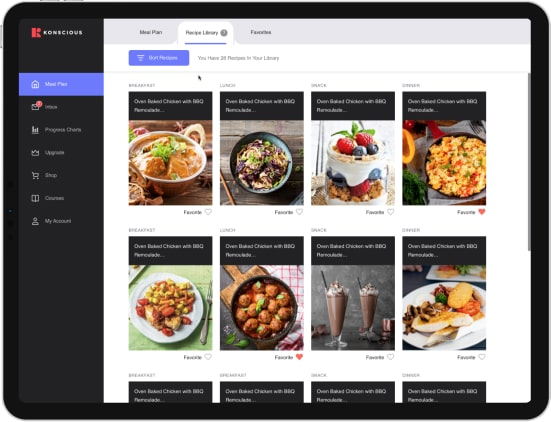
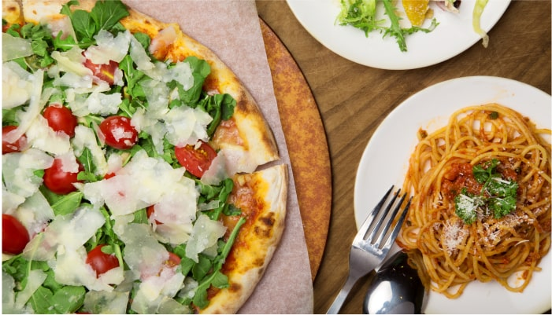

How a 54-Year-Old Obese Woman With Type 2 Diabetes, Blasted Away Belly Fat & Got
Back Her Beach Body... All While Eating Pizza, Pasta & Ice Cream
People are raving about a new “take” on a popular diet that makes it easy to
drop 31 lbs in just 28 days..
Bye-Bye, Belly Fat! Food is your friend for losing weight…
By Lorraine Turner
| Health & Lifestyle Daily
Published Monday, May 27, 2021
“ The walk to the pool felt like torture ... with all eyes (I assumed) on
me...”
I’ll never forget the dread I felt inside me as I slowly walked to the swimming
pool...
I felt all eyes peering at every inch of my body...
I usually wear baggy t-shirts and big jeans to cover up my body...
But today everything was on display...
My tummy bulge...
My jiggly arms...
My oversized thighs...
Being by the water used to be my happy place, but now I would do anything to
avoid feeling exposed and embarrassed.
At 54 years old, I weighed 207lbs and I was miserable and depressed.
Over the years, I tried everything from Jenny Craig, Weight Watchers to
Nutrisystem...
I’ve even bought countless weight loss pills online, but nothing really helped.
I no longer had the energy to wrestle with dieting.
Food brings so much enjoyment to my life...
I just couldn’t imagine a life eating boring, tasteless food that only fueled
my cravings for more
food.
And the issue was always the same...
“Every diet I tried, I would eventually give in and cheat on that diet, and then feel
guilty...
And when I feel guilty, I cheat more...
The more I cheat, the guiltier I feel...
And the guiltier I feel, the more I cheat!”
Lose 25 pounds or more by feasting on
mouth-watering food. No more starving yourself
I kind of accepted that this is just how it’s going to be.
Then one day, after a routine check-up at the doctor,
I got the shock of my life... “Your blood pressure is high, and you’ve become
prediabetic,” said the doctor.
I clenched my jaw, glancing at the chart in the doctor’s hands...
A note caught my eye, and I squinted to read it.
A note caught my eye, and I squinted to read it.
The scribbled note had written: “morbidly obese.”
My mind started racing and I knew if I had become so heavy, I could actually
die.
The doctor began asking about my eating habits.
I told him with tears streaming down my eyes...
"I’ve tried dieting, but nothing I do ever works!"
The doctor could see my frustration and pain and in a gentle and sympathetic
tone, he said:
“Look, I understand this is hard but if you don’t handle this soon, you’ll be
taking insulin in one or two years.”
My mind immediately turned to my father, who had passed away at just 64 years
of age from type 2 diabetes complications.
I knew this was serious and if I didn’t do something about my weight, I’ll be
on track for congestive heart failure, just like my father.
But given my track record with diets, I knew this wasn’t going to be
easy.
If you’re someone who’s suffering from ongoing weight issues, then pay close attention to this next
part...
Because I’m going to reveal how I discovered a simple, fun and easy way to lose
those unwanted pounds of fat without giving up the foods you love to eat.
In fact, believe it or not, FOOD IS YOUR BEST
FRIEND when it comes to losing weight.
And by making the RIGHT choices, food can help you...conquer cravings, turbocharge your resting metabolism (so you’ll burn calories
even while sitting in front of the TV!)...
... And stabilize those roller-coaster spikes of blood sugar, that lead you to experience uncontrollable
food cravings!
Trust me... I didn’t think it was possible, either.
That’s why I’m sharing this with you now...
“I want you to avoid the frustration of the ‘yo-yo’ diet rollercoaster... Or having
to count calories... Or starving yourself... And then you fail and feel bad... when it’s NOT your fault!”`
It’s tough to stay healthy and keep the weight off when you’re faced with strict,
boring diets!
You feel absolutely hopeless against the nagging fat that keeps piling onto
your body.
I’ll be honest, I had given up all hope before my doctor delivered the painful
news...
But I knew Dad was looking down at me from the heavens, disappointed his eldest
daughter just gave up.
I wanted my Dad to be proud of me...
And I was going to do EVERYTHING I could to turn this situation around.
Then — whether it was a gift from God, or just sheer luck...
I stumbled upon The Simple Keto System and my life was about to
change forever.

Now I had heard of the Ketogenic Diet or “keto” before.
In fact, it was the first thing my doctor recommended to me.
The problem was, keto seemed impossible!
I mean, every meal you have to count macros (I had no idea what a macro
was!)...
Give up delicious carbs (no thank you!)...
And eat fat and protein (is that even possible?!)...
It just didn’t sound realistic to me
Then a friend on Facebook who was about the same size as me, posted her
progress pictures online and I was blownaway by her results.
She gave a big thank you to the company Konscious for their Simple Keto System.
I was curious, and honestly, I had nothing to lose at this stage.
I needed a miracle and maybe this was it...
So I clicked the link in her post and was taken to a quiz.
The quiz was easy and only took a couple of minutes to complete...
And voila, just like that, I had a personalized keto plan that only included ALL the food I wanted to
eat...

Get passionate about eating delicious FOOD again! This puts the FUN back in your
life…
It also took into consideration my lifestyle...
My weight loss goals...
And even my body type!
I was blown away by what was in the meal plan...
Honestly, I seriously thought keto was super restrictive and you had to
basically give up EVERYTHING except bacon and eggs!
But I was wrong! In my meal plan, there was mouth-watering food like...
Gourmet Pepperoni pizza dripping in fresh mozzarella cheese...
You can lose weight while eating delicious, extra cheesy pizza... WOW!!!
Classic Italian Tiramisu that doesn’t add inches
to your waistline...
Creamy Pasta With Pesto that tastes amazing and
doesn’t leave you feeling full and sluggish for the rest of the day...
Crispy Southern Chicken Wings... my ultimate
guilt-free comfort food...
Fluffy Blueberry Pancakes drizzled in fresh
maple syrup... (I still can’t believe it’s keto!)
Creamy Spinach Parmesan Stuffed Chicken that’s
tender and juicy on the inside — crispy on the outside —and full of flavor...
Soft, moist and delicious Snicker doodle
Donuts... which are super easy to make...
Bacon Cheeseburger Casserole an instant family
favorite...
Luscious Lemon Ricotta Cake that’s bursting with
flavor...
And for all the cheese lovers out there... enjoy traditional Mexican Cheesy Quesadillas made with a crispy (and crunchy!) cheese
tortilla.
Honestly, I could keep going on and on...
The food in my personalized Keto Meal Plan is amazing... but the real question
is, does it work?
I put the Simple Keto System program to the test and here are my results:
WEEK 1
After 7 days on the Simple Keto System plan, I started seeing some very
impressive changes.
Those uncontrollable food cravings
disappeared.
For the first time in a long time, food wasn’t
controlling me, I was in complete control. I started noticing a boost in myenergy levels..
It was especially noticeable around 3 pm when I didn’t need to grab another
coffee, or some sugar to get me through the rest of the day.
On Day 2, I had a little bit of keto flu but it passed very quickly. By Day
4 it had completely passed.
The meals have been so good, I haven’t been craving my regular junk-food
fix.
On Day 7 I stepped on the scales and couldn’t believe...
I had lost 9 pounds of fat... in just the first week!
Now I’m still a little skeptical because many people say they lose a lot of
‘water weight’ at the beginning.
Hoping the weight loss continues in the next few weeks
WEEK 2
After 14 days of doing the Simple Keto System, my
energy and focus was higher than it’s ever been.
My boss even joked that if I got too smart, I might take his job.
The food is so delicious on this plan and I’m never
hungry after each meal... In fact, I actually go to bed at night excited about what I’m
going to eat the next day.
Talking about sleep, I’ve been getting deeper and restorative sleep each
night.
I was never a morning person and now I wake up
early feeling well-rested and energized.
Got on the scales on Day 14 and while I only dropped 5 pounds, I wasn’t
worried...
I know I’m on the right path and the results are only going to get better.
WEEK 3
It’s 21 Days into my personalized meal plan and all doubts were gone!
There’s something different about the Simple Keto System that I haven’t
experienced before doing other diets.
This definitely feels like something I can do for the rest of my
life.
There’s something different about the Simple Keto System that I haven’t
experienced before doing other diets.
Last night I had a bowl of creamy ice cream and the very next morning, I
dropped more weight... You’re not supposed to eat ice cream and lose weight!
It’s crazy! lol
My knee and back problems have gotten better and I’m even thinking about
playing tennis again.
The other day I went on a hike with my youngest daughter and had no issues
keeping up with her.
Stepped on the scales on Day 21 and I was down 9 pounds this week.
If I keep flushing out the pounds of unwantedfat from my body like this...
HELLO, new swimsuit!
WEEK 4
After the fourth week, I’m now convinced, this is by far the best weight
loss program I’ve ever done!
My results are incredible, not only am I losing
weight, my body feels younger and my skin is also glowing.
People are noticing and I’m getting so many compliments.
This is a little embarrassing, but I even caught a guy checking me out on
my walk the other day.
I used to dread going to see the doctor, but now I can’t wait to see the
look of surprise on his face when he sees my results.
The other night, I made one of the Simple Keto System meals for my family
and only my husband knew it was keto.
You should have seen the surprise on their faces...
My daughter, her husband and my sister-in-law are all now doing Simple Keto
System. Day 28 and I lost another 8 pounds this week.
Bye, Bye Belly Fat!
I lost 31 pounds in just 28 days doing The Simple Keto System...
Now I feel more confident to go swimming again!
What Makes The Simple Keto System So Powerful?
- It’s a personalized ‘done-for-you’ meal plan that’s simple, fun — &
it works!
- You get to eat NEW and delicious food WITHOUT the guilt... WITHOUT the blood
sugar spikes... and WITHOUT the expanding waistline.
- There’s NO counting calories... NO starving yourself... or relying on
willpower
- It’s like having a 24-Hour Metabolic Fat Burning Switch...Your body
burns fat, even while you sleep!
- It’s great for your digestive health, helping to end constipation and
restore healthy bathroom habits
- Say goodbye to uncontrollable food cravings... This puts YOU back in
control!
- They have a US-based customer support team to help you 24/7
- Once you enter the program, you get access to a FRIENDLY and LOVING Simple
Keto System community
How Can I Get Access To The Simple Keto System?
If you’re looking for the easiest (and most enjoyable) way to get more energy,
a slimmer waistline,
greater mental focus, improved digestion and peak optimal health... then you’re in luck!
Because right now, all readers that come from this page and click the button
below can get 50% off your “fat burning” personalized keto meal plan.
Once you click that button, you’ll be taken to a quick 2-minute
body type quiz that calculates your body type, and determines the right “fat burning” keto plan
that fits your specific needs.
Attention: we received
news that a Today Show affiliate plans on sharing the news of Simple Keto System's amazing
personalized meal plan with their 2 million+ viewers.
That means if you’re reading this right now, then you’re one of the lucky
few that get to take advantage of this Internet-only offer before the price of the Simple Keto
System skyrockets and you lose this incredible discount for good.
However, if you leave this page without securing your offer, then we cannot
guarantee you’ll be able to lock in the Simple Keto System at this huge discount.
You’re Covered By A 100% Money Back Guarantee!
You can try The Simple Keto System
completely
risk-free!
If you are not 100% satisfied with The Simple Keto System,
the team behind it Konscious Keto will return your investment... every single penny... with zero
hard feelings.
They know the likelihood of that happening is low... and
that’s because Konscious has spent the last 3 years perfecting their system and technology...
As well as investing thousands of dollars into hiring the
very best
nutritionists and world-class chefs...
Which is why this system is so effective and the best
weight loss system available right now.
What does that mean for you?
It means you are getting the best quality product to help you trim inches off your waistline, enjoy more energy, improved mental focus, better
digestion, quickly, peak optimal health and much, much more... guaranteed!
The team at Konscious are so confident their personalized keto meal plan is the
fat melting solution you’ve been searching for, that if you aren’t 110% satisfied, they’ll return every
cent of your money.
What Have You Got to Lose... 10, 20, 30 Pounds... Or More?
Most diet nutritionists and weight loss companies can charge anything from $300
or more — and on top of that, force you to buy their tasteless microwave meals and protein bars and
shakes filled with artificial ingredients and other hidden nasties.
And the worst thing, IF you do happen to lose weight, the only way to keep it
off is to stay on their program.
And let’s not talk about what happens if you fall out of their program — the weight can come back with a vengeance!
But don’t worry, when you claim your Simple Keto System Meal Plan, you have a guaranteed “fat burning” system for life that works and makes losing
weight fun and easy... so you’ll stay on the wagon and keep those pounds off for good.
So— what are you waiting for?
Click the button below now and take a quick 2-minute
quiz and get your personalized “fat burning” Simple Keto System meal plan today at 50% off